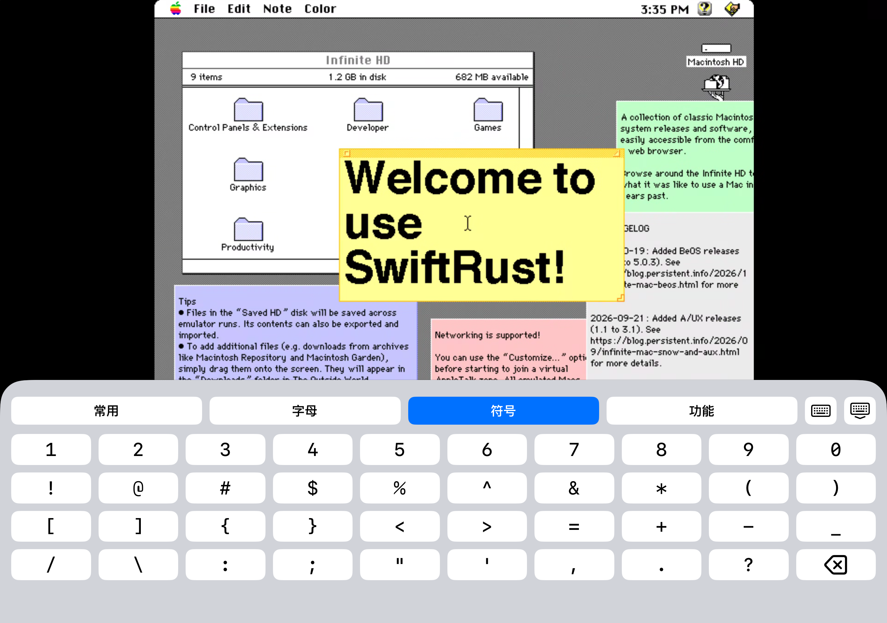
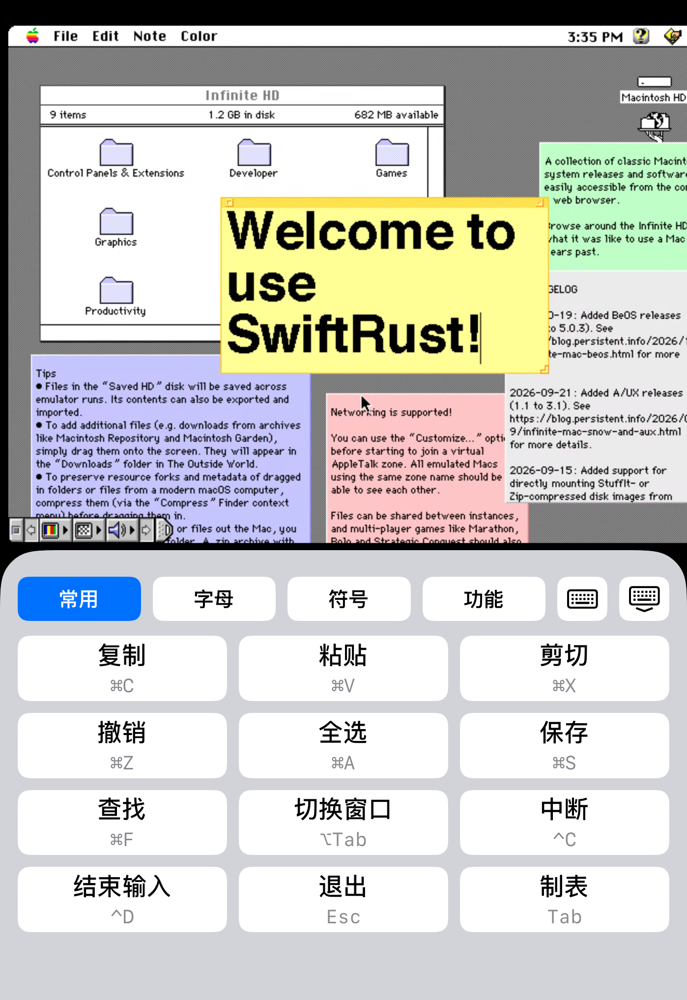
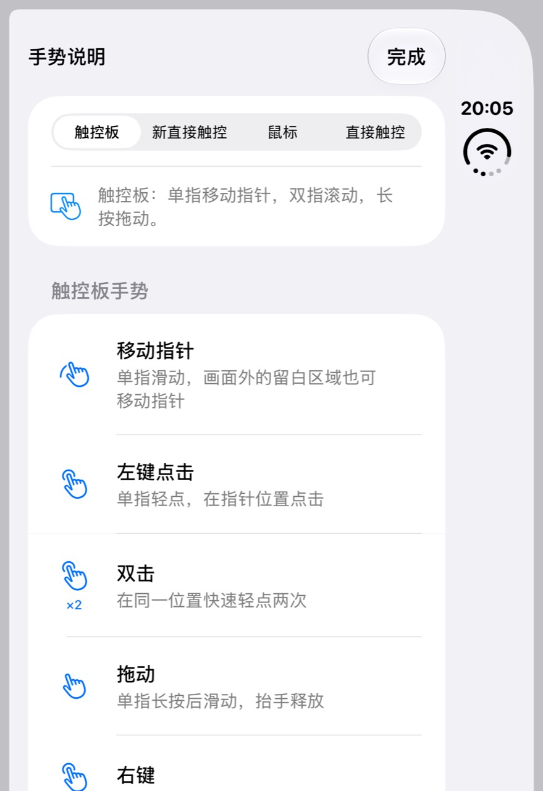
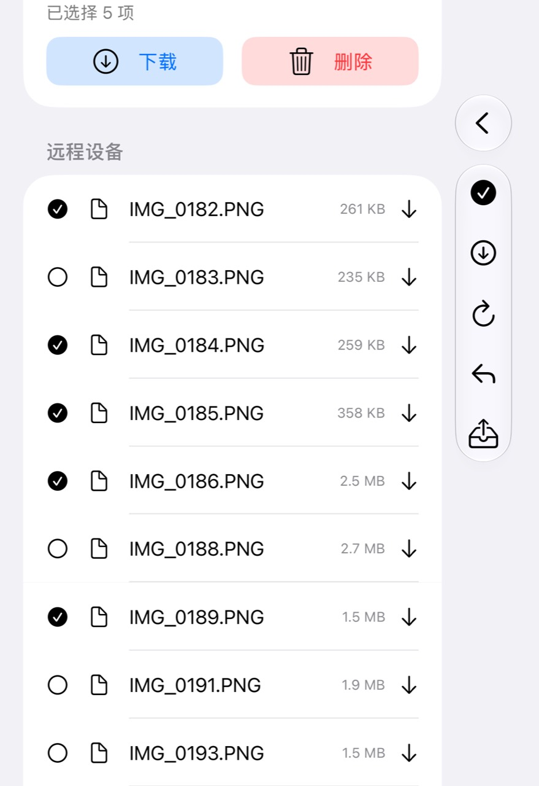

终端，也有自己的键盘。
多标签切换，长按重命名。常用快捷键与分页面快捷面板，让组合键、符号和导航触手可及。


新增触控板与新直接触控，
RustDesk 原有鼠标与直接触控手势保留。

在 RustDesk 原有手势之外，新增触控板模式：单指移动指针，双指滚动，长按拖动。原有鼠标与直接触控手势完整保留。
看桌面、开终端、传文件。
每一种连接，都有适合它的原生界面。
多标签管理会话，常用、字母、符号与功能键随时展开。
iPhone Duo · 原生终端实机截图
打开多个 SwiftRust 窗口，连接同一台电脑，再为每个窗口选择不同的显示器。各看一屏，分别操作；也能保留独立的终端与文件会话。
窗口数量与排布由系统管理 · Duo 实机截图本机文件上传到远端，远端文件与文件夹下载到手机。支持多选、批量下载与删除，下载管理方便分享和整理。
文件传输 · Duo 实机截图
把常用设备放进桌面菜单，同一设备可分别添加远程桌面和终端入口。也能直接添加窗口或扫码连接。
在设置中管理桌面菜单设备 · 菜单显示数量由系统决定
终端、多窗口、文件传输与桌面菜单均为 Duo 实机截图。
多标签切换，长按重命名。常用快捷键与分页面快捷面板，让组合键、符号和导航触手可及。
同一台电脑的不同显示器，可以放在不同窗口中；桌面、终端与文件会话也可各自保留。从桌面长按菜单添加窗口，在系统后台切换。
SwiftUI 与 UIKit 重绘界面，使用 SF Symbols，支持深色外观与多款应用图标。
远程桌面、终端和文件管理，各有自己的原生操作界面。
新增触控板与新直接触控；保留 RustDesk 原有鼠标与直接触控手势，四种方式随时切换。
分别调节指针大小、移动和滚动速度。指针大小独立于画面缩放，画布也可以锁定。
SOCKS5 / HTTPS 代理支持网址或 IP 加端口、独立开关与延迟检测。内嵌 Tailscale，支持网页授权和 Auth key 登录。
在应用内连接 Tailnet 设备，无需建立系统 VPN。远端需运行 Tailscale 与 RustDesk，并开启直接 IP 访问及相应权限。
桌面菜单设备、全屏二维码连接，以及 swiftrust:// 参数启动，把常用入口留在手边。
也可导出快捷指令模板，按系统流程添加到主屏幕，并自定义图标。
分别设置启动时恢复连接与回到前台自动重连，保留桌面、终端或文件传输的连接类型。
健康连接保持原状。后台等待时长可调，实际保留时间仍受 iOS 系统限制。
手动选择远端分辨率，在紧凑统计面板中查看 Codec、Chroma、FPS、Speed 与 Delay。
远端桌面与解码画面尺寸分别显示，连接状态一目了然。
SwiftRust 是独立修改版本，沿用 RustDesk 的远程连接核心，以 AGPL-3.0 延续开源。